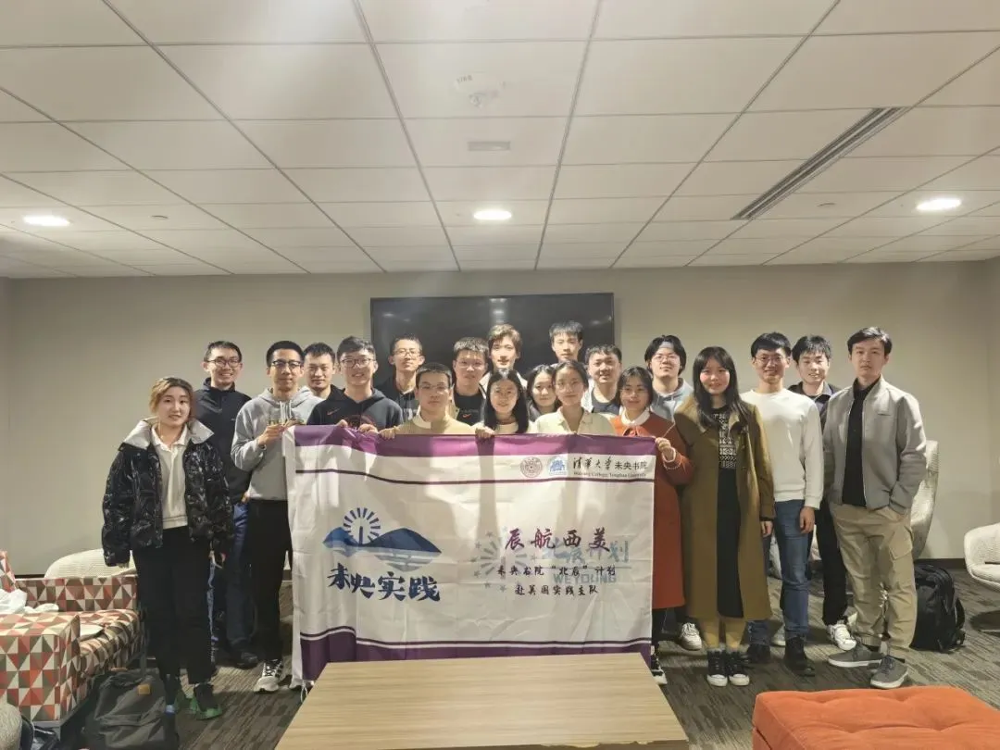
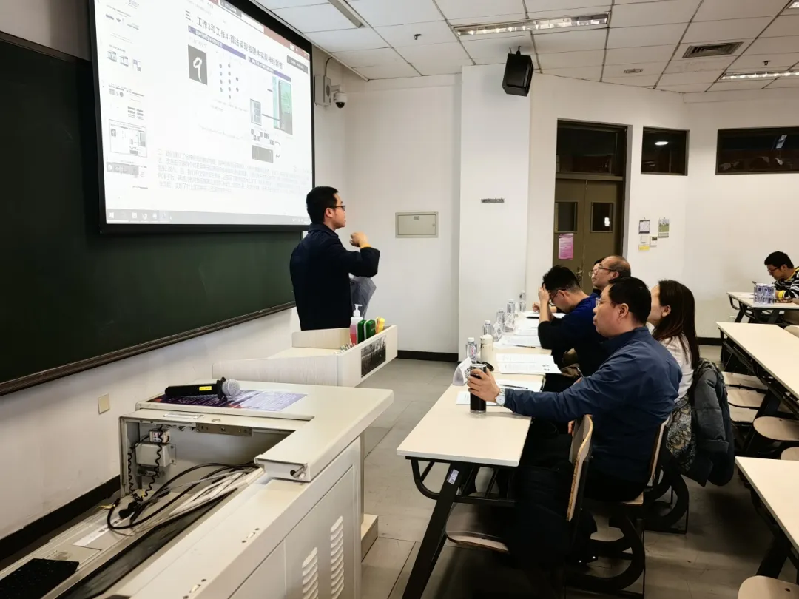

未央科协丨项目部介绍

项目部
我们是连通未央科创与学校项目的桥梁，
从这里出发，挑战自我，创造辉煌；
我们是培养科创人才与学术新秀的平台，
从这里启航，目指北辰，追逐梦想。
我们有着共同的目标：
让每一个有潜力的作品发光发热，
为每一个有想法的学子
科协项目部欢迎大家的加入！
1. 部门介绍
我们的工作包括：
1. 对内提供资源支持
依托未央书院科创人才培养计划“北辰计划”以及其他活动，我们为热爱科创的未央学生提供经验分享、学术沙龙、项目资助乃至海外实践等资源支持。目前面向二年级同学的“北辰计划”二期选拔正在进行，正在筹划面向一年级同学的“北辰训练营”。

北辰一期“辰航西美”支队访问斯坦福大学
2. 对外输送优秀项目
以校挑战杯为主轴，结合“星火计划”、“学推计划”、“闯世界计划”，项目部全程参与这些大型科创项目赛事的报名、审查以及后续扶持工作，帮助未央学子的优秀科创作品登上更大的舞台。

北辰一期“辰航西美”支队访问斯坦福大学
2. 我们期待这样的你
1.对学校和院系的科创活动感兴趣，愿意深入了解并参与组织保障工作；
2.对院系科创及朋辈交流的氛围有自己的想法，愿意相互促进，共同进步；
3.有责任心，能以真诚的态度对待工作及他人项目；
3. 你将在这里收获
1.科创赛事，答辩选拔和项目申请各环节筹备流程的深入了解；
2.亲身参与未央科创人才培养机制开创建设与逐渐成熟的宝贵经历；
3.赠人玫瑰，手有余香，在帮助完善他人项目的过程中，也为自己积蓄力量；
4.科协里的、科研路上的诸多志同道合者，也许他们将成为你未来的助力；
4. 联系人及联系方式
项目部副主席 屈之洲（微信号：Quartzz1024
项目部部长 耿其然（微信号：g13838293716）
项目部部长 高事恒（微信号：HarryGaoshT）
项目部部长 刘博文（微信号：LBW15228688055）